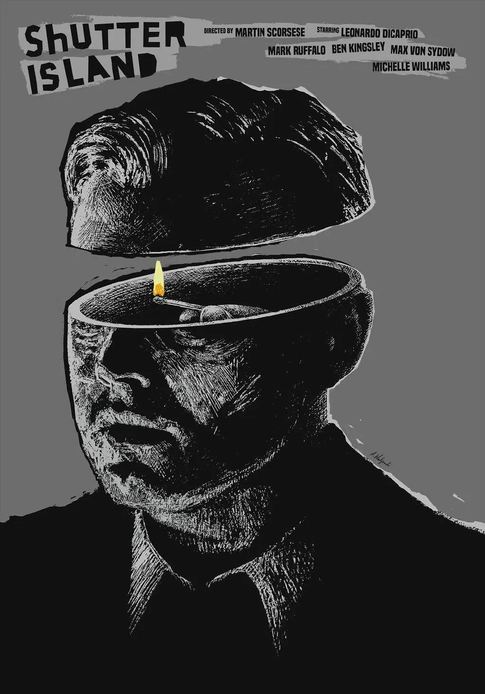

导演: 马丁·斯科塞斯
编剧: 莱塔·卡罗格里迪斯 / 丹尼斯·勒翰
主演: 莱昂纳多·迪卡普里奥 / 马克·鲁弗洛 / 本·金斯利 / 马克斯·冯·叙多夫 / 米歇尔·威廉姆斯 / 更多...
类型: 剧情 / 悬疑 / 惊悚
制片国家/地区: 美国
语言: 英语 / 德语
上映日期: 2010-02-13(柏林电影节) / 2010-02-19(美国)
片长: 138 分钟
本片根据美国小说家丹尼斯·勒翰（Dennis Lehane）的同名小说改编。 1954年，联邦警官泰迪（莱昂纳多·迪卡普里奥 Leonardo DiCaprio 饰）和搭档查克（马克·鲁弗洛 Mark Ruffalo 饰）乘船来到波士顿附近的禁闭岛精神病犯监狱调查一桩离奇失踪案。手刃亲生骨肉的女犯蕾切尔（艾米莉·莫迪默 Emily Mortimer 饰）从戒备森严的牢室神秘逃脱，藏匿于孤岛深处。泰迪怀疑监狱的主治精神病医师约翰·考利（本·金斯利 Ben Kingsley 饰）有意隐瞒内情，并向查克透露他上岛的真实目的其实是寻找当年纵火烧死他妻子德洛丽丝（米歇尔·威廉姆斯 Michelle Williams 饰）的管理员，并揭露美国政府利用精神病犯人进行人体科学实验的罪行。但随着调查的逐渐深入，真相却变得越来越扑朔迷离……